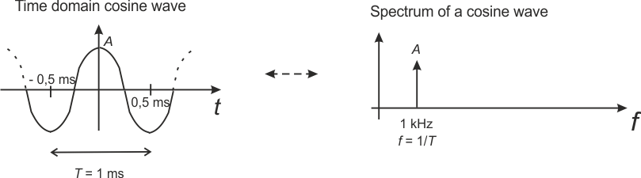

See terminology. Figure 1 shows a basic cosine waveform in time domain as we see it with an oscilloscope. As an example its cycle time is T, at which it repeats itself, is in figure 1 ms. Then there are 1000 cycles in a second, that is 1/T = 1000 1/s = 1000 Hz = 1 kHz = f (frequency or cyclical frequency).fft linkki.
Figure 2 Rectangular pulse train, its spectrum and impact of LPF
1. Rectangular pulse train with period of 1 ms, as in Figure 2, is passed through LPF with the bandwidth B = 500 Hz. What is the waveform like at the output of LPF?
tekstia